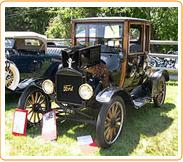

The Model T Ford
The Model T Ford,  introduced by Henry Ford in 1908, revolutionized the motor industry.
It opened up the world of motoring to the general population, and set new standards in design and prodution.
Not least was the use of an assembly line as a means of production, instead of making each car individually.
Henry Ford was an innovator. Like Steve Jobs with the Apple Mac, he saw where the industry was going, and the potential of motoring. As Ford himself put it:
If I had have asked the people what they wanted, they would have said a faster horse.
Rolls-Royce Silver Shadow
The Rolls Royce Silver Shadow
 was manufactured in England and sold between 1965 and 1980, and is considered
by many to be the ultimate in a luxury car.
was manufactured in England and sold between 1965 and 1980, and is considered
by many to be the ultimate in a luxury car.
It contained many innovative features, including a high-pressure hydraulic system, dual circuit breaking and a self-levelling suspension.
Designed by John Polwhele Blatchley, and launched at the Paris motor show in 1965, it was the most technologically advanced car of its day.
It was also the first Rolls-Royce designed to be user-driven, rather than chauffeur driven. There were 16,717 Silver Shadows sold during the twelve years of its manufacture. This seems remarkable for such and expensive car. The price of a Siver Shadow in 1969 was $19,700.
Aston Martin DB5
The Aston Martin derives its name from one of the company founders, Lionel Martin, and Aston Hill speed hill climb in Buckinghamshire, where the car originally used to race.
It was originally designed by Martin and Robert Bamford as a bespoke high-quality sports car which was both a work of art and and exhilarating to drive.
The Aston Martin DB5 became arguably the most famous car in the world after being driven by James Bond in Goldfinger. Not only a work of art, this car was also famous for its gadgetry.
An eject seat? You've got to be joking! (Sean Connery as James Bond in Goldfinger).
I never joke about my work 007 ( Desmond Llewelyn as Q).
Daimeler 250
The Daimler 250 was a four-door saloon manufactured in Coventry, England, between 1967 - 1969. It is a stylish, luxurious car.
This car had many innovative features: an alternator (instead of a dynamo), negative earth electrical system, twin air-cleaned carburetors, ventilated leather upholstery, reclining front seats and a heated rear window.
Power steering and overdrive were optional extras.
The Daimler 250 had a V8 engine designed by Edward Turner. It was the last car to have a Daimler engine after the company was acquired by Jaguar in 1960. Production of the Daimler 250 ceased in 1969, after just 17 600 were manufactured.
Jaguar XJ
The Jaguar XJ began manufacture in September, 1968. It replaced the E-type Jaguar and contained a 2.5 L version of the famous Jaguar XK engine. Power steering and overdrive came as standard with this model, and air-conditioning was an optional extra.
Designed under the leadership of Sir William Lyons for Jaguar owners who wanted "space pace and grace", the Jaguar XJ was a stylish, luxurious saloon car.
This car is arguably Jaguar's greatest creation. In the original television adverts, Sir William Lyons referred to this car as "the finest Jaguar ever".
Forty years on, it is hard to argue with him.